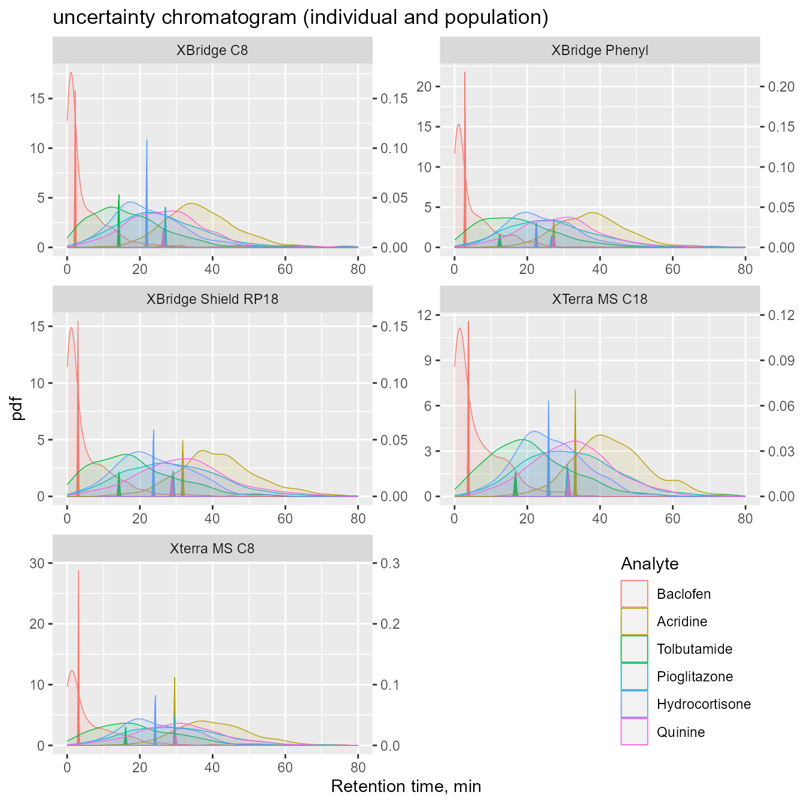
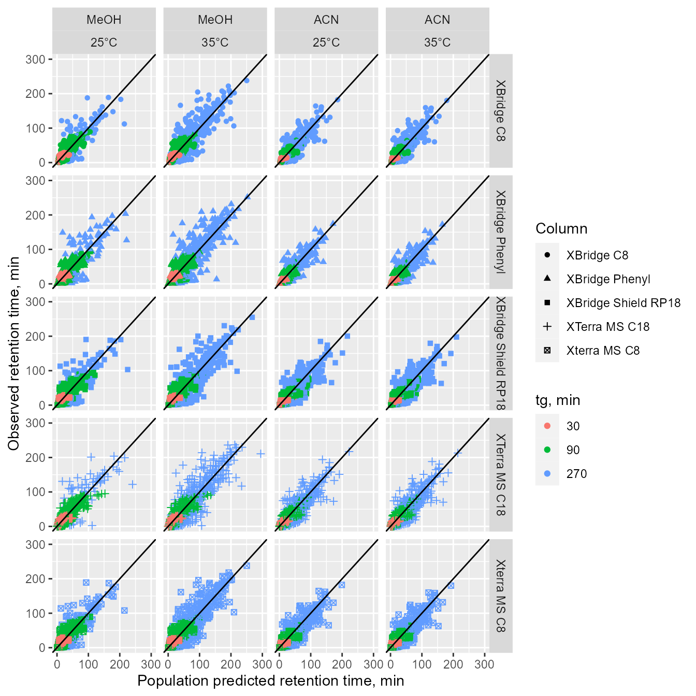
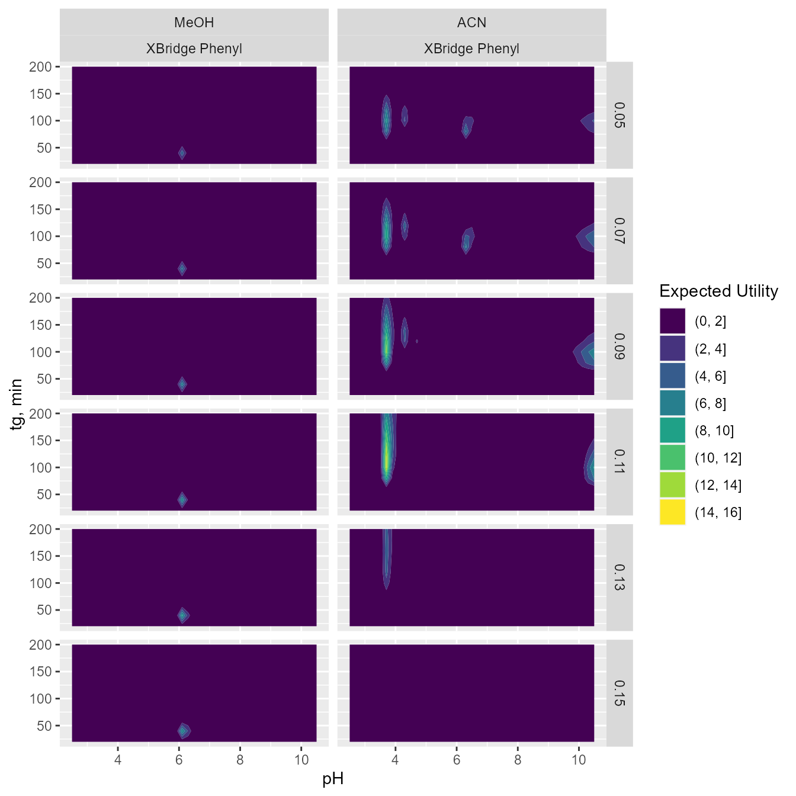
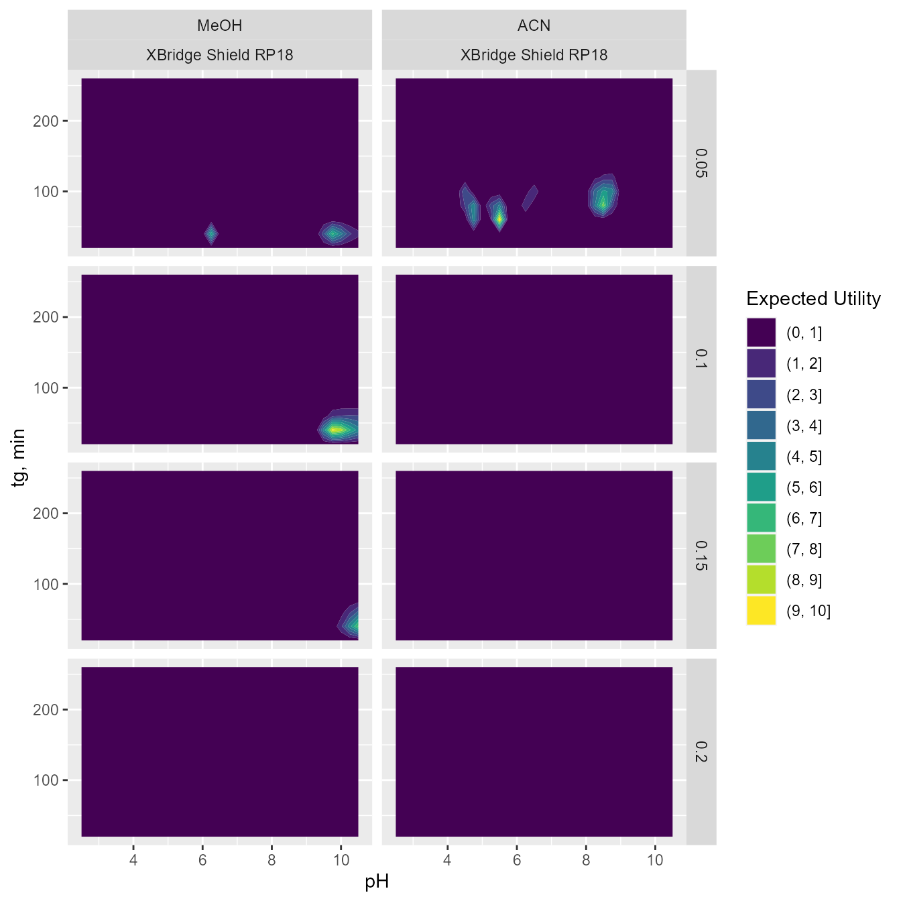
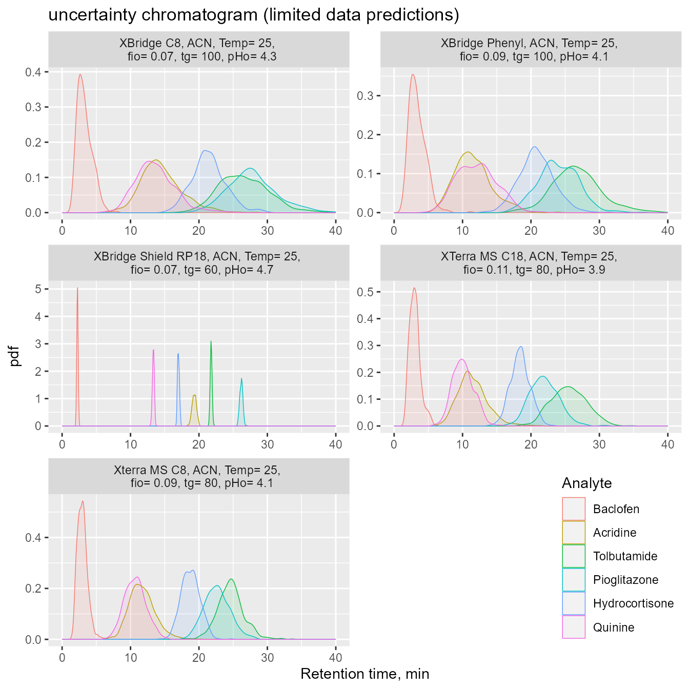

Comparison of chromatographic stationary phases using Bayesian-based multilevel modeling
Author
Paweł Wiczling, Agnieszka Kamedulska
Published
August 24, 2023
Introduction
In this work we applied the previously developed Bayesian multilevel framework Kubik, Kaliszan, and Wiczling (2018) to characterize chromatographic gradient retention time datasets collected using a multicomponent mixtures of analytes, five stationary phases, and a wide range of chromatographic conditions (pH, organic modifier, temperature, gradient program). Such datasets carry much information about chromatographic retention that, if extracted, can provide useful predictive information, i.e. a detailed multidimensional characterization of chromatographic stationary phases and ability to predict retention (along with uncertainty) based on various number of preliminary experiments (e.g. to predict retention time for a set of analytes given no, or several measurements collected using a different stationary phase).
In this case study, we compared five RP-HPLC stationary phases (XBridge Shield RP18, XTerra MS C18, XBridge Phenyl, XBridge C8, Xterra MS C8) based on LC-MS/TOF data.
Experimental design
The data was collected using a mixture of 300 analytes and 84 gradient liquid chromatography experiments for each column. The experiments differed in gradient duration (30, 90, and 270 min) and pH of the mobile phase (from 2.5 to 10.5). Experiments were conducted in MeOH or ACN as organic modifiers and at two temperatures (\(\small 25^0C\) and \(\small 35^0C\)).
The molecular structure of the analytes was converted from SMILE format to MDL mol format using OpenBabel. The input molecules were then analyzed for the presence of approximately 204 functional groups and structural elements using Checkmol (version 0.5b N. Haider, University of Vienna, 2003-2018). Functional groups that were not present on any analyte and functional groups merging other simpler functional groups were excluded from the analysis. The lipophilicity (log P), dissociation constant (pKalit) were added to the dataset. They were calculated using ACD/Labs program based on the structures of analytes generated from smiles strings.
Setup
The packages we will use are listed below.
Data
Data can be accessed via github (data folder) or osf.io repositories Kubik et al. (2022b).
Prepare the data
We will begin with loading and merging all the required datasets:
The data requires some cleaning:
we remove measurements with low score, analytes with less than 42 measurements per column, analytes with less than 210 measurements out of total 420, and use only measurements with the highest score (if several are present)
we remove some outlying measurements (mismatch between literature pKa and observed data)
we also prepare available predictors: pKa, logP and functional_groups
finally, we select analytes with <=2 dissociation steps fot the analysis
Exploratory data analysis
During the exploratory data analysis phase, we create a series of plots to better understand our data.
Plots
The following graphs present retention time profiles for 6 analytes:
acridine (monoprotic acid)
baclofen (zwitterion: acidic and basic group)
hydrocortison (neutral)
pioglitazone (zwitterion: basic and acidic group)
quinine (diprotic: 2 basic groups),
tolbutamide (monoprotic base).
The vertical lines show ACD-based pKa values (solid line: acidic group; dotted line: basic group)
Summary of the data
Number of identified analytes: 141
Number of observations: 51530
\(\small logP\): 2.5 \(\pm\) 1.82
Number of analytes with 0, 1 and 2 dissociation steps: 14, 88, 39
Number of acidic and basic groups: 46 and 120
Number of functional groups across all analytes included in the analysis:
Methods
Model
In this work \(\small z\) = 1..51530 denotes observation, \(\small i\)=1..141 denotes analyte, \(\small col\)=1..5 denotes column, \(\small m\)=1..2 denotes organic modifier and \(\small r\)=1..\(\small R[i]\) denotes dissociation step for \(\small i\)-th analyte. The observed retention times (\(\small t_{Robs,z}\)) were described using the following model:
where z denotes z-th observation and student_t denotes the Student’s t-distribution with the mean given by the predicted retention time \(\small t_{R,z}\), scale \(\small \sigma_{i,col}\) (analyte and column-specific), and normality parameter \(\small \nu\) (set to 3).
Gradient retention time \(\small t_{R,z}\) was calculated utilizing the well-known integral equation:
where \(\small ki_z(t)\) denotes instantaneous isocratic retention factor corresponding to the mobile phase composition at time t at column inlet for analyte and conditions corresponding to the z-th observation, \(\small t_{0,z}\) denotes column hold-up (dead) time and \(\small t_e\) denotes extra column-time. The numerical solution of this integral equation was carried out using method of steps with 4 and 10 steps for methanol and acetonitrile gradients using method proposed by Nikitas et al. (Nikitas and Pappa-Louisi 2002) The following function described the relationship between the isocratic retention factor and pH for an ith-analyte with \(\small R[i]\) dissociation steps and \(\small R[i]+1\) forms.
\(\small log(k_{z,i,r})\) was assumed to depend on the organic modifier content based on the Neue equation, on temperature assuming linear equation, and on the pH of the mobiles phase (for ionized forms of analytes).
where \(\small logkw_{col,i,r}\) represents logarithm of retention factors extrapolated to 0% of organic modifier content for column \(\small col\), \(\small i\)-th analyte and \(\small r\)-th analyte form; \(\small S1_{i,m,col,r}\) and \(\small S2_m\) are the slopes in the Neue equation for column \(\small c\), modifier \(\small m\), \(\small i\)-th analyte and \(\small r\)-th analyte form. In this parametrization of the Neue equation, \(\small S1\) reflects the difference between logarithm of retention factors corresponding to water (0% of organic modifier content) and MeOH or ACN (100% of organic modifier content) as eluents. \(\small dlogkT_{col,i}\) denotes the change in \(\small logkw\) due to the increase in temperature by \(\small 10^oC\). \(\small apH_{col,m,i,r}\) denotes the pH effects on \(\small logkw\);
Further a linear relationship between \(\small pKa\) values and the organic modifier content was assumed:
where \(\small pKa_{z,i,r}(t)\) denotes dissociation constant of an \(\small i\)-th analyte and \(\small r\)-th dissociation step form and chromatographic conditions corresponding the z-th observation, \(\small pKaw_{i,r}\) denotes aqueous \(\small pKa\), and \(\alpha_{m,i,r}\) denotes the slope for \(\small m\)-th modifier, \(\small i\)-th analyte and \(\small r\)-th form. The linear relationships is generally valid for \(\small \varphi\) < 0.8.
The relationship between pH and the organic modifier content for various combinations of organic modifier and buffer was experimentally determined prior to the chromatographic analysis. The obtained relationships was then described using quadratic equations for each nominal pH, temperature and organic modifier:
First, individual values of \(\small logkw\), \(\small S1\) are defined for the neutral form of an analyte in MeOH for the Xbridge Sheld RP18 column (denoted as \(\small logkwN_i\) and \(\small S1mN_i\)). The effect of ACN was described as (\(\small dS1N_i\)), the effect of column (\(\small c=1..4\)) was described by \(\small clogkwN_{c,i}\), \(\small cS1mN_{c,i}\), and \(\small cdS1N_{c,i}\)). The individual parameters for the neutral forms were described using the following equations:
were MVN denotes the multivariate normal distribution; \(\small \hat{logkw}\), \(\small \hat{S1m}\), \(\small \hat{dS1}\) are the mean values of individual chromatographic parameters that correspond to a typical neutral analyte with \(\small logP\) =2.2 at \(\small 25^oC\) on Xbridge Shield RP18 stationary phase. \(\small \beta s\) are regression coefficients between the individual chromatographic parameters and the \(\small logP_i\). \(\small \omega\) denotes the standard deviation for between analyte variability (BAV). \(\small \hat{dlogkT}\) denotes the effect of temperature for a typical analyte and \(\small \omega_T\) the standard deviation for between analyte variability for temperature effects. Similar set of equations was used for column effects. Here c denoted the column effect (4 differences with respect to he reference column).
The difference in retention between the ionized form of an analyte and the neutral form of an analyte was separately estimated for acids and bases for \(\small logkw\), \(\small S1m\), \(\small dS1\) parameters. Similar set of equations was used for column effects.
\[
\begin{aligned}
& dlogkwA_a \sim N(\hat{dlogkw_1}, \kappa_1), \\
& dlogkwB_b \sim N(\hat{dlogkw_2}, \kappa_1), \\
& dS1mA_a \sim N(\hat{dS1m_1}, \kappa_2), \\
& dS1mB_b \sim N(\hat{dS1m_2}, \kappa_2), \\
& ddS1A_a \sim N(\hat{ddS1_1}, \kappa_3), \\
& ddS1B_b \sim N(\hat{ddS1_2}, \kappa_3), \\
& cdlogkwA_{c,a} \sim N(\hat{cdlogkw_{c,1}}, c\kappa_{c,1}) \text{ for c=1...4}, \\
& cdlogkwB_{c,b} \sim N(\hat{cdlogkw_{c,2}}, c\kappa_{c,1}) \text{ for c=1...4}, \\
& cdS1mA_{c,a} \sim N(\hat{cdS1m_{c,1}}, c\kappa_{c,2}) \text{ for c=1...4}, \\
& cdS1mB_{c,b} \sim N(\hat{cdS1m_{c,2}}, c\kappa_{c,2}) \text{ for c=1...4}, \\
& cddS1A_{c,a} \sim N(\hat{cddS1_{c,1}}, c\kappa_{c,3}) \text{ for c=1...4}, \\
& cddS1B_{c,b} \sim N(\hat{cddS1_{c,2}}, c\kappa_{c,3}) \text{ for c=1...4}. \\
\end{aligned}
\] where a=1..46 and b=1..120 denote the indexes of acidic and basic groups.
Similarly \(\small pKa\) an \(\small \alpha\) parameters were described separately for acids and based:
Further, we created the matrices containing the value of parameters for i-th analyte, col-th column, m-th modifier an r-th dissociation step based on the value of neutral form and effects of column, organic modifier, and dissociation. This transformation was denoted as f(.). The exact procedure can be found in the model code displayed later.
The detailed description of parameters and used priors is provided in the following table (BAV denotes between analyte variability):
Desciption of model paramters
Name
Namecode
Description
Priors
XBridge Shield RP18 parameters
\(\hat{logkw}\)
logkwHat
typical logkw [Neutral]
N(2.2,2)
\(\hat{S1m}\)
S1mHat
effect of MeOH on logkw [Neutral]
N(4, 1)
\(\hat{dS1}\)
dS1Hat
effect of ACN on S1m [Neutral]
N(1, 1)
\(\beta_1\)
beta[1]
effect of logP on logkw [Neutral]
N(1, 0.125)
\(\beta_2\)
beta[2]
effect of logP on S1m [Neutral]
N(0.5, 0.5)
\(\hat{dlogkw_1}\)
dlogkwHat[1]
effect of dissociation on logkw [Acids]
N(-1, 0.125)
\(\hat{dlogkw_2}\)
dlogkwHat[2]
effect of dissociation on logkw [Bases]
N(-1, 0.125)
\(\hat{dS1m_1}\)
dS1mHat[1]
effect of dissociation on S1m [Acids]
N(0, 0.5)
\(\hat{dS1m_2}\)
dS1mHat[2]
effect of dissociation on S1m [Bases]
N(0, 0.5)
\(\hat{ddS1_1}\)
ddS1Hat[1]
effect of dissociation on dS1 [Acids]
N(0, 0.25)
\(\hat{ddS1_2}\)
ddS1Hat[2]
effect of dissociation on dS1 [Bases]
N(0, 0.25)
\(\hat{apH_1}\)
apH[1]
effect of pH on logkw [Acids]
N(0, 0.1)
\(\hat{apH_2}\)
apH[2]
effect of pH on logkw [Bases]
N(0, 0.1)
\(\hat{dlogkT}\)
dlogkTHat
effect of temperature on logkw
N(-0.087, 0.022)
\(\omega_1\)
omega[1]
sd of BAV for logkw [Neutral]
N+(0, 2)
\(\omega_2\)
omega[2]
sd of BAV for S1 [Neutral]
N+(0, 2)
\(\omega_3\)
omega[3]
sd of BAV for dS1 [Neutral]
N+(0, 2)
\(\rho\)
rho[2,1]
correlation logkw vs S1 [Neutral]
LKJCORRN(0.75, 0.125)
\(\omega_T\)
omegaT
sd of BAV for dlogkT [Neutral]
N+(0, 0.022)
\(\kappa_1\)
kappa[1]
sd of BAV for dlogkw [Acids and Bases]
N+(0, 0.25)
\(\kappa_2\)
kappa[2]
sd of BAV for dS1m [Acids and Bases]
N+(0, 0.25)
\(\kappa_3\)
kappa[3]
sd of BAV for ddS1 [Acids and Bases]
N+(0, 0.25)
between column differences
\(\hat{clogkw_c}\)
clogkwHat[c]
effect of column c on logkw [Neutral]
N(0, 1)
\(\hat{cS1m_c}\)
cS1mHat[c]
effect of column c on S1m [Neutral]
N(0, 0.5)
\(\hat{cdS1_c}\)
cdS1Hat[c]
effect of column c on dS1 [Neutral]
N(0, 0.5)
\(c\beta_{c,1}\)
cbeta[c,1]
effect of column c on beta[1] [Neutral]
N(0, 0.25)
\(c\beta_{c,2}\)
cbeta[c,2]
effect of column c on beta[2] [Neutral]
N(0, 0.25)
\(\hat{cdlogkw_{c,1}}\)
cdlogkwHat[c,1]
effect of column c on dlogkw [Acids]
N(0, 0.0625)
\(\hat{cdlogkw_{c,2}}\)
cdlogkwHat[c,2]
effect of column c on dlogkw [Bases]
N(0, 0.0625)
\(\hat{cdS1m_{c,1}}\)
cdS1mHat[c,1]
effect of column c on dS1m [Acids]
N(0, 0.25)
\(\hat{cdS1m_{c,2}}\)
cdS1mHat[c,2]
effect of column c on dS1m [Bases]
N(0, 0.25)
\(\hat{cddS1_{c,1}}\)
cddS1Hat[c,1]
effect of column c on ddS1 [Acids]
N(0, 0.125)
\(\hat{cddS1_{c,2}}\)
cddS1Hat[c,2]
effect of column c on ddS1 [Bases]
N(0, 0.125)
\(\hat{cdlogkT_c}\)
cdlogkTHat[c]
effect of column c on dlogkwT
N(0, 0.011)
\(capH_{c,1}\)
capH[c,1]
effect of column c on apH [Acids]
N(0, 0.05)
\(capH_{c,2}\)
capH[c,2]
effect of column c on apH [Bases]
N(0, 0.05)
\(c\omega_{c,1}\)
comega[c,1]
sd of BAV for clogkw [Neutral]
N+(0, 1)
\(c\omega_{c,2}\)
comega[c,2]
sd of BAV for cS1 [Neutral]
N+(0, 1)
\(c\omega_{c,3}\)
comega[c,3]
sd of BAV for cdS1 [Neutral]
N+(0, 1)
\(c\kappa_{c,1}\)
ckappa[c,1]
sd of BAV for cdlogkw [Acids and Bases]
N+(0, 0.125)
\(c\kappa_{c,2}\)
ckappa[c,2]
sd of BAV for cdS1m [Acids and Bases]
N+(0, 0.125)
\(c\kappa_{c,3}\)
ckappa[c,3]
sd of BAV for cddS1 [Acids and Bases]
N+(0, 0.125)
\(c\omega_{T,c}\)
comegaT[c]
sd of BAV for dlogkT
N+(0, 0.011)
S2
\(\hat{logS2m}\)
logS2mHat
typical value of S2m (log10 scale)
N(-0.7, 0.125);
\(\hat{dlogS2}\)
dlogS2Hat
effect of ACN on logS2m
N(1, 0.125);
pKa
\(\hat{\alpha m_1}\)
alphamHat[1]
effect of MeOH on pKa [Acids]
N(2, 0.25)
\(\hat{\alpha m_2}\)
alphamHat[2]
effect of MeOH on pKa [Bases]
N(-1, 0.25)
\(\hat{d\alpha_1}\)
dalphaHat[1]
effect of ACN on alpham [Acids]
N(0, 0.125)
\(\hat{d\alpha_2}\)
dalphaHat[2]
effect of ACN on alpham [Bases]
N(0, 0.125)
\(\tau_1\)
tau[1]
sd of BAV for pKalit
N+(0, 0.25)
\(\tau_2\)
tau[2]
sd of BAV for alpham
N+(0, 0.125)
\(\tau_3\)
tau[3]
sd of BAV for dalpha
N+(0, 0.125)
Residuals
\(m\sigma\)
msigma
typical sd of residuals for XBridge
N+(0,1)
\(s\sigma\)
ssigma
sd of BAV of residuals for XBridge
N(0,1)
\(clogmsigma_c\)
clogmsigma[c]
effect of column c on msigma (log scale)
N+(0,125)
\(c\sigma_c\)
cssigma[c]
sd of BAV of residuals for column c
N+(0,125)
Stan
Multilevel modeling was performed in Stan software linked with R/ cmdstanr. For the inference we used the follwoing settings: number of iterations = 500, warmup = 1000, and number of Markov chains = 8. The reduce_sum function, which was selected to accelerate the calculations, works by parallelizing the execution of a single Stan chain across multiple cores. Convergence diagnostics were checked using Gelman−Rubin statistics and trace plots.
Initialize variables and parameters
The Stan model:
functions {
// credit http://srmart.in/informative-priors-for-correlation-matrices-an-easy-approach/
real lkj_corr_point_lower_tri_lpdf(matrix rho, real point_mu_lower,
real point_scale_lower) {
// works only for [2x2 matrix]
real lpdf = lkj_corr_lpdf(rho | 1)
+ normal_lpdf(rho[2, 1] | point_mu_lower, point_scale_lower);
return lpdf;
}
// pH and fi at a given time at column inlet
vector gra_state(real t, vector hplcparam) {
vector[2] sol;
real tg = hplcparam[1];
real td = hplcparam[2];
real fio = hplcparam[5];
real fik = hplcparam[6];
real pHo = hplcparam[8];
real alpha1 = hplcparam[9];
real alpha2 = hplcparam[10];
real fi;
fi = fio + (fik - fio) / tg * (t - td);
if (t < td) {
fi = fio;
} else if (t > tg + td) {
fi = fik;
}
sol[1] = fi;
sol[2] = pHo + alpha1 * fi + alpha2 * fi ^ 2;
return sol;
}
real funlnki(vector logkw, vector apH, vector S1, real S2, vector pKaw, vector alpha,
int nDiss, real fi, real pH) {
real lnki;
vector[3] logkix;
vector[2] pHmpKa;
logkix = log(10) *(logkw - S1*(1+S2) * fi / (1 + S2 * fi) + apH * (pH - 7));
pHmpKa = log(10) *(pH - (pKaw + alpha * fi));
if (nDiss == 0) {
lnki = logkix[1];
} else if (nDiss == 1) {
lnki = logkix[1] +
log1p_exp(pHmpKa[1] + logkix[2] - logkix[1]) -
log1p_exp(pHmpKa[1]);
} else if (nDiss == 2) {
lnki = logkix[1] +
log1p_exp(pHmpKa[1]+logkix[2]-logkix[1] + log1p_exp(pHmpKa[2]+logkix[3]-logkix[2])) -
log1p_exp(pHmpKa[1] + log1p_exp(pHmpKa[2]));
}
return lnki;
}
vector areaandslope(real dt, real lnki1, real lnki2, real invki1, real invki2) {
vector[2] cki_b;
real bo;
real cki;
if (invki2 > 1.001 * invki1) {
bo = (lnki1 - lnki2) / dt;
cki = (invki2 - invki1) / bo;
}
else if (invki1 > 1.001 * invki2) {
bo = (lnki2 - lnki1) / dt;
cki = (invki1 - invki2) / bo;
}
else {
bo = 0.001 / dt;
cki = dt * (invki2 + invki1) / 2;
}
cki_b[1] = cki;
cki_b[2] = bo;
return cki_b;
}
real chromgratrapz(int steps, vector logkw, vector apH, vector S1, real S2, vector pKaw,
vector alpha, int nDiss, vector hplcparam) {
real tg = hplcparam[1];
real td = hplcparam[2];
real to = hplcparam[3];
real te = hplcparam[4];
vector[1] sol;
real time1;
real time2;
vector[2] fipH1;
vector[2] fipH2;
real lnki1;
real lnki2;
real invki1;
real invki2;
vector[2] cki_b;
real cumki1;
real cumki2;
real bo;
real tr;
real dt;
dt = tg / steps;
time1 = 0;
time2 = td;
fipH1 = gra_state(time1, hplcparam);
lnki1 = funlnki(logkw, apH, S1, S2, pKaw, alpha, nDiss, fipH1[1], fipH1[2]);
lnki2=lnki1;
invki1 = exp(-lnki1)/to;
invki2 = invki1;
cumki1 = 0;
cumki2 = td*invki1;
bo = 0.001 / td;
for (x in 1 : steps) {
if (cumki2 >= 1) {
continue;
}
time1 = time2;
time2 += dt;
fipH2 = gra_state(time2, hplcparam);
lnki1 = lnki2;
lnki2 = funlnki(logkw, apH, S1, S2, pKaw, alpha, nDiss, fipH2[1], fipH2[2]);
invki1 = invki2;
invki2 = exp(-lnki2)/to;
cki_b = areaandslope(dt, lnki1, lnki2, invki1, invki2);
cumki1 = cumki2;
cumki2 += cki_b[1];
bo = cki_b[2];
}
if (cumki2 >= 1 && cumki1==0) {
tr = te+to+1/invki2;
} else if (cumki2 >= 1) {
tr = te+to+time1+log1p_exp(log((1-cumki1)*bo*to) + lnki1)/bo;
} else if (cumki2 < 1) {
tr = te+to+time2+(1-cumki2)/invki2;
}
return tr;
}
real partial_sum(array[] int ind, int start, int end,
vector trobs,
array[] int steps,
array[] vector hplcparam,
array[] int analyte,
array[] int column,
array[] int modifier,
array[] int R,
array[,] vector logkw,
array[,] vector apH,
array[, ,] vector S1,
array[,] real S2,
array[] vector pKaw,
array[,] vector alpha,
array[,] real dlogkT,
array[] vector sigma) {
real lp = 0;
for (z in start : end) {
real y_hat = chromgratrapz(steps[z],
logkw[analyte[z], column[z], : ] + dlogkT[analyte[z],column[z]] * hplcparam[z, 11],
apH[analyte[z], column[z], : ],
S1[analyte[z], modifier[z], column[z], : ],
S2[modifier[z], column[z]],
pKaw[analyte[z], : ],
alpha[analyte[z],modifier[z], : ],
R[analyte[z]],
hplcparam[z]);
lp = lp + student_t_lpdf(trobs[z] | 3, y_hat, sigma[analyte[z],column[z]]);
}
return lp;
}
}
data {
int nAnalytes; // number of analytes
int nColumns; // number of columns
int nModifiers; // number of org. modifiers
int nObs; // number of observations
array[nObs] int analyte; // analyte indexes
array[nObs] int column; // column indexes
array[nObs] int modifier; // modifier indexes
array[nObs] int<lower=1> steps; // steps for gradient retention time aproximation
array[nObs] vector[12] hplcparam; // [tg, td, to, te, fio, fik, org modifier, pHo, alpha1, alpha2, (temp-25)/10, column]
vector[nAnalytes] logPobs;
int<lower=0, upper=2> maxR; //
array[nAnalytes] int<lower=0, upper=2> R;
int<lower=1> nGroupsA;
int<lower=1> nGroupsB;
vector[nGroupsA] pKaslitA;
vector[nGroupsB] pKaslitB;
array[nGroupsA,2] int idxGroupsA;
array[nGroupsB,2] int idxGroupsB;
vector[nObs] trobs; // observed retention factors
int<lower=0, upper=1> run_estimation; // 0 for prior predictive, 1 for estimation
}
transformed data {
int grainsize = 1;
array[nObs] int ind = rep_array(1, nObs);
}
parameters {
real logkwHat; // typical logkw [Neutral]
real S1mHat; // effect of MeOH on logkw [Neutral]
real dS1Hat; // effect of ACN on S1m [Neutral]
array[2] real dlogkwHat; // effect of dissociation on logkw [Acids, Bases]
array[2] real dS1mHat; // effect of dissociation on S1m [Acids, Bases]
array[2] real ddS1Hat; // effect of dissociation on dS1 [Acids, Bases]
real logS2mHat; // typical value of S2m (log10 scale)
real dlogS2Hat; // effect of ACN on logS2m
vector[2] beta; // effect of logP on logkw and S1m
real dlogkTHat; // effect of temperature on logkw
vector[2] apH; // effect of pH on logkw [Acids, Bases]
array[2] real alphamHat; // effect of MeOH on pKa [Acids, Bases]
array[2] real dalphaHat; // effect of ACN on alpham [Acids, Bases]
vector<lower=0>[3] tau; // sd for between analyte variability of pKa's
vector<lower=0>[3] omega; // sd of BAV [logkw,S1m, dS1]
corr_matrix[2] rho; // correlation matrix [logkw vs. S1m]
real<lower=0> omegaT; // sd of BAV [dlogkT]
vector<lower=0>[3] kappa; // sd of BAV [dlogkw,dS1m,ddS1]
// 2nd column
vector[nColumns-1] clogkwHat; // effect of column on logkw [Neutral]
vector[nColumns-1] cS1mHat; // effect of column on S1m [Neutral]
vector[nColumns-1] cdS1Hat; // effect of column on dS1 [Neutral]
matrix[nColumns-1,2] cdlogkwHat; // effect of column on logkw [Acids, Bases]
matrix[nColumns-1,2] cdS1mHat; // effect of column on dS1m [Acids, Bases]
matrix[nColumns-1,2] cddS1Hat; // effect of column on ddS1 [Acids, Bases]
matrix[nColumns-1,2] cbeta;
vector[nColumns-1] cdlogkTHat; // effect of column on dlogkTHat
matrix[nColumns-1,2] capH; // effect of column on apH [Acids, Bases]
matrix<lower=0>[nColumns-1,3] comega; // sd of BAV [clogkw,cS1m,cdS1]
vector<lower=0>[nColumns-1] comegaT; // sd of BAV [cdlogkT]
matrix<lower=0>[nColumns-1,3] ckappa; // sd of BAV [cdlogkw,cdS1m,cddS1]
cholesky_factor_corr[nColumns-1] corr_L; // cholesky factor correlation matrix
// 1st column
array[nAnalytes] vector[2] paramN;
vector[nAnalytes] dS1N;
vector[nAnalytes] dlogkT;
vector[nGroupsA] dlogkwA;
vector[nGroupsB] dlogkwB;
vector[nGroupsA] dS1mA;
vector[nGroupsB] dS1mB;
vector[nGroupsA] dS1A;
vector[nGroupsB] dS1B;
// 2nd column
matrix[nColumns-1, nAnalytes] etaclogkwNStd;
array[nColumns-1] vector[nAnalytes] etacS1mN;
array[nColumns-1] vector[nAnalytes] etacdS1N;
array[nColumns-1] vector[nAnalytes] etacdlogkT;
array[nColumns-1] vector[nGroupsA] etacdlogkwA;
array[nColumns-1] vector[nGroupsB] etacdlogkwB;
array[nColumns-1] vector[nGroupsA] etacdS1mA;
array[nColumns-1] vector[nGroupsB] etacdS1mB;
array[nColumns-1] vector[nGroupsA] etacdS1A;
array[nColumns-1] vector[nGroupsB] etacdS1B;
// Dissociation
vector[nGroupsA] pKawA;
vector[nGroupsB] pKawB;
vector[nGroupsA] etaalphamA;
vector[nGroupsB] etaalphamB;
vector[nGroupsA] etadalphaA;
vector[nGroupsB] etadalphaB;
// residual variability for the 1st and 2nd column
real<lower=0> msigma; // typical sigma for the 1st column]
real<lower=0> ssigma;
vector[nAnalytes] logsigma;
vector[nColumns-1] clogmsigma; // effect of column on log(msigma)]
vector<lower=0>[nColumns-1] cssigma; ; //sd of residual [1st,2nd column]
array[nColumns-1] vector[nAnalytes] etaclogsigma;
}
transformed parameters {
cov_matrix[2] Omega;
array[nAnalytes] vector[3] miu;
array[nAnalytes,3] vector[nColumns-1] cmiu;
array[nAnalytes,nColumns] vector[maxR + 1] logkwx;
array[nAnalytes,nModifiers, nColumns] vector[maxR + 1] S1x;
array[nModifiers,nColumns] real S2x;
array[nAnalytes,nColumns] vector[maxR + 1] apHx;
array[nAnalytes,nModifiers] vector[maxR] alphax;
array[nAnalytes, nColumns] real dlogkTx;
array[nAnalytes] vector[maxR] pKawx;
array[nAnalytes] vector[nColumns] sigmax;
array[nColumns-1] vector[nAnalytes] clogkwN;
matrix[nColumns-1, nAnalytes] etaclogkwN;
array[nColumns-1] vector[nAnalytes] cS1mN;
array[nColumns-1] vector[nAnalytes] cdS1N;
array[nColumns-1] vector[nGroupsA] cdlogkwA;
array[nColumns-1] vector[nGroupsB] cdlogkwB;
array[nColumns-1] vector[nGroupsA] cdS1mA;
array[nColumns-1] vector[nGroupsB] cdS1mB;
array[nColumns-1] vector[nGroupsA] cdS1A;
array[nColumns-1] vector[nGroupsB] cdS1B;
array[nColumns-1] vector[nAnalytes] cdlogkT;
array[nColumns-1] vector[nAnalytes] clogsigma;
vector[nGroupsA] alphamA;
vector[nGroupsB] alphamB;
vector[nGroupsA] dalphaA;
vector[nGroupsB] dalphaB;
Omega = quad_form_diag(rho, omega[1 : 2]); // diag_matrix(omega) * rho * diag_matrix(omega)
for (i in 1 : nAnalytes) {
miu[i, 1] = logkwHat + beta[1] * (logPobs[i] - 2.2);
miu[i, 2] = S1mHat + beta[2] * (logPobs[i] - 2.2);
miu[i, 3] = dS1Hat;
}
for (i in 1 : nAnalytes) {
for (c in 1 : (nColumns-1)) {
cmiu[i, 1, c] = clogkwHat[c] + cbeta[c,1] * (logPobs[i] - 2.2);
cmiu[i, 2, c] = cS1mHat[c] + cbeta[c,2] * (logPobs[i] - 2.2);
cmiu[i, 3, c] = cdS1Hat[c];
}}
// Matt's trick to use unit scale
etaclogkwN = diag_pre_multiply(comega[,1], corr_L * etaclogkwNStd);
for (i in 1 : nAnalytes) {
logkwx[i, 1, : ] = paramN[i,1]*[1,1,1]';
for (c in 1 : (nColumns-1)) {
clogkwN[c,i] = cmiu[i, 1, c] + etaclogkwN[c,i];
logkwx[i, c+1, : ] = (paramN[i,1]+clogkwN[c,i])*[1,1,1]';
}}
for (d in 1 : nGroupsA) {
logkwx[idxGroupsA[d,1], 1, 1+idxGroupsA[d,2]] += dlogkwA[d];
if (idxGroupsA[d,2]==1) {
logkwx[idxGroupsA[d,1], 1, 3] += dlogkwA[d];
}
for (c in 1 : (nColumns-1)) {
cdlogkwA[c,d] = cdlogkwHat[c,1] + ckappa[c,1]*etacdlogkwA[c,d];
logkwx[idxGroupsA[d,1], c+1, 1+idxGroupsA[d,2]] += dlogkwA[d]+cdlogkwA[c,d];
if (idxGroupsA[d,2]==1) {
logkwx[idxGroupsA[d,1], c+1, 3] += dlogkwA[d]+cdlogkwA[c,d];
}}}
for (d in 1 : nGroupsB) {
logkwx[idxGroupsB[d,1], 1, idxGroupsB[d,2]] += dlogkwB[d];
if (idxGroupsB[d,2]==2) {
logkwx[idxGroupsB[d,1], 1, 1] += dlogkwB[d];
}
for (c in 1 : (nColumns-1)) {
cdlogkwB[c,d] = cdlogkwHat[c,2]+ ckappa[c,1]*etacdlogkwB[c,d];
logkwx[idxGroupsB[d,1], c+1, idxGroupsB[d,2]] += dlogkwB[d]+cdlogkwB[c,d];
if (idxGroupsB[d,2]==2) {
logkwx[idxGroupsB[d,1], c+1, 1] += dlogkwB[d]+cdlogkwB[c,d];
}}}
for (i in 1 : nAnalytes) {
apHx[i, 1, : ] = [0,0,0]';
for (c in 1 : (nColumns-1)) {
apHx[i, c+1, : ] = [0,0,0]';
}}
for (d in 1 : nGroupsA) {
apHx[idxGroupsA[d,1], 1, 1+idxGroupsA[d,2]] += apH[1];
if (idxGroupsA[d,2]==1) {
apHx[idxGroupsA[d,1], 1, 3] += apH[1];
}
for (c in 1 : (nColumns-1)) {
apHx[idxGroupsA[d,1], c+1, 1+idxGroupsA[d,2]] += apH[1]+capH[c,1];
if (idxGroupsA[d,2]==1) {
apHx[idxGroupsA[d,1], c+1, 3] += apH[1]+capH[c,1];
}}}
for (d in 1 : nGroupsB) {
apHx[idxGroupsB[d,1], 1, idxGroupsB[d,2]] += apH[2];
if (idxGroupsB[d,2]==2) {
apHx[idxGroupsB[d,1], 1, 1] += apH[2];
}
for (c in 1 : (nColumns-1)) {
apHx[idxGroupsB[d,1], c+1, idxGroupsB[d,2]] += apH[2]+capH[c,2];
if (idxGroupsB[d,2]==2) {
apHx[idxGroupsB[d,1], c+1, 1] += apH[2]+capH[c,2];
}}}
for (i in 1 : nAnalytes) {
S1x[i, 1, 1, : ] = paramN[i,2]*[1,1,1]';
S1x[i, 2, 1, : ] = paramN[i,2]*[1,1,1]' + dS1N[i];
for (c in 1 : (nColumns-1)) {
cS1mN[c,i] = cmiu[i,2,c] + comega[c,2]*etacS1mN[c,i];
cdS1N[c,i] = cmiu[i,3,c] + comega[c,3]*etacdS1N[c,i];
S1x[i, 1, c+1, : ] = (paramN[i,2]+cS1mN[c,i])*[1,1,1]' ;
S1x[i, 2, c+1, : ] = (paramN[i,2]+cS1mN[c,i])*[1,1,1]' + (dS1N[i]+cdS1N[c,i]);
}}
for (d in 1 : nGroupsA) {
S1x[idxGroupsA[d,1], 1, 1, 1+idxGroupsA[d,2]] += dS1mA[d];
S1x[idxGroupsA[d,1], 2, 1, 1+idxGroupsA[d,2]] += dS1mA[d]+dS1A[d];
if (idxGroupsA[d,2]==1) {
S1x[idxGroupsA[d,1], 1, 1, 3] += dS1mA[d];
S1x[idxGroupsA[d,1], 2, 1, 3] += dS1mA[d]+dS1A[d];
}
for (c in 1 : (nColumns-1)) {
cdS1mA[c,d]= cdS1mHat[c,1] + ckappa[c,2]*etacdS1mA[c,d];
cdS1A[c,d] = cddS1Hat[c,1] + ckappa[c,3]*etacdS1A[c,d];
S1x[idxGroupsA[d,1], 1, c+1, 1+idxGroupsA[d,2]] += dS1mA[d] +cdS1mA[c,d];
S1x[idxGroupsA[d,1], 2, c+1, 1+idxGroupsA[d,2]] += dS1mA[d]+dS1A[d]+cdS1mA[c,d]+cdS1A[c,d];
if (idxGroupsA[d,2]==1) {
S1x[idxGroupsA[d,1], 1, c+1, 3] += dS1mA[d] +cdS1mA[c,d];
S1x[idxGroupsA[d,1], 2, c+1, 3] += dS1mA[d]+dS1A[d]+cdS1mA[c,d]+cdS1A[c,d];
}}}
for (d in 1 : nGroupsB) {
S1x[idxGroupsB[d,1], 1, 1, idxGroupsB[d,2]] += dS1mB[d];
S1x[idxGroupsB[d,1], 2, 1, idxGroupsB[d,2]] += dS1mB[d]+dS1B[d];
if (idxGroupsB[d,2]==2) {
S1x[idxGroupsB[d,1], 1, 1, 1] += dS1mB[d];
S1x[idxGroupsB[d,1], 2, 1, 1] += dS1mB[d]+dS1B[d];
}
for (c in 1 : (nColumns-1)) {
cdS1mB[c,d]= cdS1mHat[c,2] + ckappa[c,2]*etacdS1mB[c,d];
cdS1B[c,d] = cddS1Hat[c,2] + ckappa[c,3]*etacdS1B[c,d];
S1x[idxGroupsB[d,1], 1, c+1, idxGroupsB[d,2]] += dS1mB[d] +cdS1mB[c,d];
S1x[idxGroupsB[d,1], 2, c+1, idxGroupsB[d,2]] += dS1mB[d]+dS1B[d]+cdS1mB[c,d]+cdS1B[c,d];
if (idxGroupsB[d,2]==2) {
S1x[idxGroupsB[d,1], 1, c+1, 1] += dS1mB[d] +cdS1mB[c,d];
S1x[idxGroupsB[d,1], 2, c+1, 1] += dS1mB[d]+dS1B[d]+cdS1mB[c,d]+cdS1B[c,d];
}}}
S2x[1,1] = 10^(logS2mHat);
S2x[2,1] = 10^(logS2mHat + dlogS2Hat);
for (c in 1 : (nColumns-1)) {
S2x[1,c+1] = S2x[1,1];
S2x[2,c+1] = S2x[2,1];
}
for (i in 1 : nAnalytes) {
dlogkTx[i, 1] = dlogkT[i];
for (c in 1 : (nColumns-1)) {
cdlogkT[c,i] = cdlogkTHat[c]+comegaT[c]*etacdlogkT[c,i];
dlogkTx[i, c+1] = dlogkT[i] + cdlogkT[c,i];
}}
for (i in 1 : nAnalytes) {
pKawx[i, : ] = [0,0]';
alphax[i, 1, : ] = [0,0]';
alphax[i, 2, : ] = [0,0]';
}
for (d in 1 : nGroupsA) {
alphamA[d] = alphamHat[1] + tau[2]*etaalphamA[d];
dalphaA[d] = dalphaHat[1] + tau[3]*etadalphaA[d];
pKawx[idxGroupsA[d,1], idxGroupsA[d,2]] = pKawA[d];
alphax[idxGroupsA[d,1], 1, idxGroupsA[d,2]]= alphamA[d];
alphax[idxGroupsA[d,1], 2, idxGroupsA[d,2]]= alphamA[d]+dalphaA[d];
}
for (d in 1 : nGroupsB) {
alphamB[d] = alphamHat[2] + tau[2]*etaalphamB[d];
dalphaB[d] = dalphaHat[2] + tau[3]*etadalphaB[d];
pKawx[idxGroupsB[d,1], idxGroupsB[d,2]] = pKawB[d];
alphax[idxGroupsB[d,1], 1, idxGroupsB[d,2]]= alphamB[d];
alphax[idxGroupsB[d,1], 2, idxGroupsB[d,2]]= alphamB[d]+dalphaB[d];
}
for (i in 1 : nAnalytes) {
sigmax[i, 1] = exp(logsigma[i]);
for (c in 1 : (nColumns-1)) {
clogsigma[c,i] = clogmsigma[c] + cssigma[c]*etaclogsigma[c,i];
sigmax[i, c+1] = exp(logsigma[i]+clogsigma[c,i]);
}}
}
model {
logkwHat ~ normal(2.2, 2);
S1mHat ~ normal(4, 1);
dS1Hat ~ normal(1, 0.5);
dlogkwHat ~ normal(-1, 0.125);
dS1mHat ~ normal(0, 0.5);
ddS1Hat ~ normal(0, 0.25);
logS2mHat ~ normal(-0.7, 0.125);
dlogS2Hat ~ normal(1, 0.125);
beta[{1}] ~ normal(1, 0.125);
beta[{2}] ~ normal(0.5, 0.5);
dlogkTHat ~ normal(-0.087, 0.022);
apH ~ normal(0, 0.1);
alphamHat[{1}] ~ normal(2, 0.25);
alphamHat[{2}] ~ normal(-1, 0.25);
dalphaHat ~ normal(0, 0.125);
tau[{1}] ~ normal(0, 0.25);
tau[{2,3}] ~ normal(0, 0.125);
omega ~ normal(0, 2);
rho ~ lkj_corr_point_lower_tri(0.75, 0.125);
omegaT ~ normal(0, 0.022);
kappa ~ normal(0, 0.25);
clogkwHat ~ normal(0, 1);
cS1mHat ~ normal(0, 0.5);
cdS1Hat ~ normal(0, 0.25);
to_vector(cdlogkwHat) ~ normal(0, 0.0625);
to_vector(cdS1mHat) ~ normal(0, 0.25);
to_vector(cddS1Hat) ~ normal(0, 0.125);
to_vector(cbeta) ~ normal(0, 0.25);
cdlogkTHat ~ normal(0, 0.011);
to_vector(capH) ~ normal(0, 0.05);
to_vector(comega) ~ normal(0, 0.5);
comegaT ~ normal(0, 0.011);
to_vector(ckappa) ~ normal(0, 0.125);
corr_L~lkj_corr_cholesky(2.0);
for (i in 1 : nAnalytes) {
paramN[i] ~ multi_normal(miu[i,1:2], Omega);
}
dS1N ~ normal(miu[,3], omega[3]);
dlogkT ~ normal(dlogkTHat, omegaT);
dlogkwA ~ normal(dlogkwHat[1], kappa[1]);
dlogkwB ~ normal(dlogkwHat[2], kappa[1]);
dS1mA ~ normal(dS1mHat[1], kappa[2]);
dS1mB ~ normal(dS1mHat[2], kappa[2]);
dS1A ~ normal(ddS1Hat[1], kappa[3]);
dS1B ~ normal(ddS1Hat[2], kappa[3]);
to_vector(etaclogkwNStd) ~ normal(0, 1);
for (c in 1 : (nColumns-1)) {
etacS1mN[c] ~ normal(0,1);
etacdS1N[c] ~ normal(0,1);
etacdlogkT[c] ~ normal(0,1);
etacdlogkwA[c] ~ normal(0,1);
etacdlogkwB[c] ~ normal(0,1);
etacdS1mA[c] ~ normal(0,1);
etacdS1mB[c] ~ normal(0,1);
etacdS1A[c] ~ normal(0,1);
etacdS1B[c] ~ normal(0,1);
}
pKawA ~ normal(pKaslitA, tau[1]);
pKawB ~ normal(pKaslitB, tau[1]);
etaalphamA ~ normal(0,1);
etaalphamB ~ normal(0,1);
etadalphaA ~ normal(0,1);
etadalphaB ~ normal(0,1);
msigma ~ normal(0,1);
ssigma ~ normal(0,1);
logsigma ~ normal(log(msigma),ssigma);
clogmsigma ~ normal(0,0.125);
cssigma ~ normal(0,0.125);
for (c in 1 : (nColumns-1)) {
etaclogsigma[c] ~ normal(0,1);
}
if (run_estimation == 1) {
target += reduce_sum(partial_sum, ind, grainsize, trobs, steps,
hplcparam, analyte, column, modifier, R, logkwx, apHx,
S1x, S2x, pKawx, alphax, dlogkTx, sigmax);
}
}
generated quantities {
corr_matrix[nColumns-1] crho;
crho = corr_L * corr_L';
}
Fitting the model
Compile the model:
The optimization was used for initial testing:
For local computations one can use cmdstanr:
We performed computations at the Academic Computer Center in Gdańsk, Tryton Cluster. In this case:
After calculations, we loaded the output files using cmdstanr. The files are accessible through stan output files.
finally we checked the diagnostics of Monte Carlo inferences based on the Stan documentation described here .
The diagnostics are reasonable given model complexity. Output copied here to save time:
[1] "Processing csv files: output_1.csv, output_2.csv, output_3.csv, output_4.csv, output_5.csv, output_6.csv, output_7.csv, output_8.csv"
[2] ""
[3] "Checking sampler transitions treedepth."
[4] "4000 of 4000 (100.00%) transitions hit the maximum treedepth limit of 10, or 2^10 leapfrog steps."
[5] "Trajectories that are prematurely terminated due to this limit will result in slow exploration."
[6] "For optimal performance, increase this limit."
[7] ""
[8] "Checking sampler transitions for divergences."
[9] "No divergent transitions found."
[10] ""
[11] "Checking E-BFMI - sampler transitions HMC potential energy."
[12] "E-BFMI satisfactory."
[13] ""
[14] "Effective sample size satisfactory."
[15] ""
[16] "The following parameters had split R-hat greater than 1.05:"
[17] "etacdS1N[3,38], etaalphamB[92]"
[18] "Such high values indicate incomplete mixing and biased estimation."
[19] "You should consider regularizating your model with additional prior information or a more effective parameterization."
[20] ""
[21] "Processing complete."
First plot presents parameter specific for XBridge Shield RP18 column and parameters common for all the columns:
Figure 1: ?(caption)
Figure 2: ?(caption)
Column effects relative to XBridge Shield RP18 column:
Parameters characterizing columns:
Figure 3: ?(caption)
Parameters characterizing columns:
Standard deviations:
Isocratic predictions
To better asses the impact of parameters on retention we created graphs presenting the isocratic logarithm of retention factor vs. \(\varphi\) for selected analytes. Separate graphs are shown for each dissociation form (r=1,r=2,r=3). Here the individual predictions (given all the data) are shown:
Similarly we can quantify the column effects (between column differences in logk using XBridge Shield RP18 as a reference column):
or predict the organic modifier content leading to logk of 1:
Individual Parameters
Individual parameter are the analyte-specific parameters estimated by the model. The following plots allow to assess the correlations between these parameters.
Neutral Form
Individual parameters for the reference column (XBridge Shield RP18):
Individual parameters for column effects:
Effects of dissociation
Individual parameters for the reference column (XBridge Shield RP18)
Individual parameters for the particular column (1-4) relative to XBridge Shield RP18
pKa-related paraemters
Eta plots
Eta plots shows the centered and standardized individual parameters (e.g. \(\eta_{logkwN,i} = (logkwN_i-(\hat{logkwN} + \beta_1 \cdot \log P_i))/\omega_1\)). They allow to visualize the unexplained between-analyte variability of chromatographic parameters.
Neutral Forms
Effect of dissociation
Effect of functional groups (exploratory)
The following ETA plots present the relationship between individual eta values for logkwN and number of functional groups. This part is exploratory. Graphs are shown if there are at least 10 functional groups present in the dataset.
Comparison of observed and model predicted retention times
The individual and population model predictions were simulated using a more dense design. The individual predictions are based on population-level parameters, predictors, and all of the observed retention time measurements. The population predictions are based on population-level parameters and predictors.
Individual predictions:
Population predictions:
Uncertainity chromatogram
Below is the example of an uncertainty chromatogram expected for tg = 90 min, pH = 4.9, Temp = \(25^oC\) in MeOH. The individual and population predictions are shown.

Isocratic predictions (population predictions)
To better asses the impact of parameters on retention we created graphs presenting the isocratic logarithm of retention factor vs. \(\small \varphi\) for selected analytes. Separate graphs are shown for each dissociation form (r=1, r=2, r=3). Here the population predictions are shown:
Similarly we can quantify the column effects (between column differences in logk using XBridge Shield RP18 as a reference column):
or predict the organic modifier content leading to logk of 1:
Effect of logP
The following plot show the effect of log P on isocratic retention times (population predictions) for typical neutral, basic and acidic analyte. The uncertainties are large. They are not shown to improve visibility.
Goodness of fit plots
Several goodness of fit plots were used to describe how well the model fits our set of observations.
Residuals:
Observed vs. population and individual predictions:

Predictions and decision making. Case Study 1
Here we want to show applicability of the model to predicting the best chromatogram using all the available data.
Utility maps
Let’s find the best chromatogram that maximize utility using the set of experiments used to build the model.
The utility function is based on lowest retention time, highest retention time and the difference of retention times between the critical pair of analytes. This utility is zero if at least one of the analyte has retention higher that 40, less than 2 min or the difference in retention time is less than 2. Otherwise, it favors shorter runs. (.) denotes design variables.
\[
I(x) = 1 \ if \ condition \ x \ is \ true \\
I(x) = 0 \ if \ condition \ x \ is \ false
\]

# A tibble: 1 x 9
tg fio fik Mod pHid pHo Temp ColumnName EUtility
<dbl> <dbl> <dbl> <chr> <int> <dbl> <int> <chr> <dbl>
1 60 0.05 0.8 ACN 10 5.50 25 XBridge Shield RP18 11.4
# A tibble: 1 x 9
tg fio fik Mod pHid pHo Temp ColumnName EUtility
<dbl> <dbl> <dbl> <chr> <int> <dbl> <int> <chr> <dbl>
1 60 0.05 0.8 ACN 10 5.50 25 XTerra MS C18 9.50
# A tibble: 1 x 9
tg fio fik Mod pHid pHo Temp ColumnName EUtility
<dbl> <dbl> <dbl> <chr> <int> <dbl> <int> <chr> <dbl>
1 40 0.15 0.8 MeOH 12 6.00 25 XBridge Phenyl 4.08
# A tibble: 1 x 9
tg fio fik Mod pHid pHo Temp ColumnName EUtility
<dbl> <dbl> <dbl> <chr> <int> <dbl> <int> <chr> <dbl>
1 80 0.05 0.8 ACN 5 4.00 25 XBridge C8 7.73
# A tibble: 1 x 9
tg fio fik Mod pHid pHo Temp ColumnName EUtility
<dbl> <dbl> <dbl> <chr> <int> <dbl> <int> <chr> <dbl>
1 80 0.1 0.8 ACN 5 4.00 25 Xterra MS C8 13.7
Uncertainity chromatogram
Let’s visualize chromatograms with the highest expected utility
Predictions and decision making. Case 2
The proposed model can be used for decision making having access to limiet data. Here we want to ilustrate this by predicting XTerra MS C18, XBridge Phenyl, XBridge C8, Xterra MS C8 retention times based on XBridge Shield RP18 data.
tg fio fik Mod pH pHo Temp ColumnName EUtility
15404 90 0.05 0.8 ACN 3 4.202902 35 XTerra MS C18 1.347357
3. The best choice for XBridge Phenyl
tg fio fik Mod pH pHo Temp ColumnName EUtility
30632 90 0.05 0.8 ACN 3 4.202902 35 XBridge Phenyl 1.66615
4. The best choice for XBridge C8
tg fio fik Mod pH pHo Temp ColumnName EUtility
45860 90 0.05 0.8 ACN 3 4.202902 35 XBridge C8 1.669043
5. The best choice for Xterra MS C8
tg fio fik Mod pH pHo Temp ColumnName EUtility
61088 90 0.05 0.8 ACN 3 4.202902 35 Xterra MS C8 1.561612
Uncertainity chromatogram
Below is the example of a chromatogram (along with uncertainty) expected for tg = 90 min, pH = 8.9, Temp = 25oC in ACN.
Utility maps
We can also determine more detailed graph presenting relationship between the expected utility and design variables:
The best chromatogram can be sought based on utility map:

# A tibble: 1 x 9
tg fio fik Mod pHid pHo Temp ColumnName EUtility
<dbl> <dbl> <dbl> <chr> <int> <dbl> <int> <chr> <dbl>
1 60 0.05 0.8 ACN 10 5.50 25 XBridge Shield RP18 10.1
# A tibble: 1 x 9
tg fio fik Mod pHid pHo Temp ColumnName EUtility
<dbl> <dbl> <dbl> <chr> <int> <dbl> <int> <chr> <dbl>
1 80 0.1 0.8 ACN 5 4.00 25 XTerra MS C18 2.64
# A tibble: 1 x 9
tg fio fik Mod pHid pHo Temp ColumnName EUtility
<dbl> <dbl> <dbl> <chr> <int> <dbl> <int> <chr> <dbl>
1 100 0.1 0.8 ACN 5 4.00 25 XBridge Phenyl 2.06
# A tibble: 1 x 9
tg fio fik Mod pHid pHo Temp ColumnName EUtility
<dbl> <dbl> <dbl> <chr> <int> <dbl> <int> <chr> <dbl>
1 80 0.05 0.8 ACN 6 4.17 25 XBridge C8 1.86
# A tibble: 1 x 9
tg fio fik Mod pHid pHo Temp ColumnName EUtility
<dbl> <dbl> <dbl> <chr> <int> <dbl> <int> <chr> <dbl>
1 100 0.1 0.8 ACN 6 4.17 25 Xterra MS C8 2.39
Uncertainity chromatogram
Let’s visualize chromatograms with the highest expected utility given the experimental data.

Conclusions
The large gradient retention time data and multilevel modeling allow to characterize separation of RP HPLC stationary phases.
References
Kamedulska, Agnieszka, Łukasz Kubik, Julia Jacyna, Wiktoria Struck-Lewicka, Michał J. Markuszewski, and Paweł Wiczling. 2022. “Toward the General Mechanistic Model of Liquid Chromatographic Retention.”Analytical Chemistry 94 (31): 11070–80. https://doi.org/10.1021/acs.analchem.2c02034.
Kamedulska, Agnieszka, Łukasz Kubik, and Paweł Wiczling. 2022. “Statistical Analysis of Isocratic Chromatographic Data Using Bayesian Modeling.”Analytical and Bioanalytical Chemistry 414 (11): 3471–3348. https://doi.org/10.1007/s00216-022-03968-x.
Kubik, Łukasz, Julia Jacyna, Wiktoria Struck-Lewicka, Michał J. Markuszewski, and Paweł Wiczling. 2022a. “LC-TOF-MS Data Collected for 300 Small Molecules. XBridge Shield RP18 Column.”Osf.io/ 1 (1): 1. https://doi.org/10.17605/OSF.IO/ZQTJ7.
Kubik, Łukasz, Roman Kaliszan, and Paweł Wiczling. 2018. “Analysis of Isocratic-Chromatographic-RetentionData Using BayesianMultilevelModeling.”Analytical Chemistry 90 (22): 13670–79. https://doi.org/10.1021/acs.analchem.8b04033.
Nikitas, P., and A. Pappa-Louisi. 2002. “New Equations Describing the Combined Effect of pH and Organic Modifier Concentration on the Retention in Reversed-Phase Liquid Chromatography.”Journal of Chromatography. A 971 (1-2): 47–60. https://doi.org/10.1016/s0021-9673(02)00965-2.
Wiczling, Paweł, Agnieszka Kamedulska, and Łukasz Kubik. 2021. “Application of Bayesian Multilevel Modeling in the Quantitative Structure–Retention Relationship Studies of Heterogeneous Compounds.”Analytical Chemistry 93 (18): 6961–71. https://doi.org/10.1021/acs.analchem.0c05227.
Licenses
Code & copy; 2023, Paweł Wiczling, licensed under BSD-3.
Text & copy; 2023, Paweł Wiczling, licensed under CC-BY-NC 4.0.